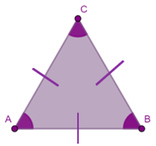

Segitiga adalah salah satu bangun datar yang mempunyai tiga sisi dan tiga sudut. Sifat segitiga sebagai berikut.
Gambar 1 (Segitiga)
1. Mempunyai 3 sudut, yaitu sudut A, sudut B, dan sudut C.
2. Mempunyai 3 sisi, yaitu sisi AB, sisi BC, dan sisi CA.
3. Jumlah ketiga sudutnya adalah 180° (sudut A + sudut B + sudut C = 180° )
Jenis segitiga berdasarkan sisi, yaitu:
a. Segitiga sama sisi
Segitiga sama sisi adalah segitiga yang ketiga sisinya sama panjang, sehingga semua sudutnya juga sama besar yaitu 60°.

Gambar 2 (Segitiga Sama Sisi)
Bangun segitiga sama sisi memiliki sifat-sifat sebagai berikut:
1. Memiliki 3 ruas garis: ruas garis: AB, AC, AB, AC, dan BC.
2. Ketiga (semua) ruas garis sama panjang. ruas garis sama panjang.
3. Memiliki dua macam ukuran macam ukuran alas dan tinggi. dan tinggi.
4. Memiliki tiga buah sudut sama besar (60°).
b. Segitiga Sama Kaki
Segitiga sama kaki adalah segitiga yang dua dari tiga sisinya sama panjang. Segitiga ini memiliki dua sudut yang sama besar yaitu sudut antara kaki dan alas s yang sama besar yaitu sudut antara kaki dan alas segitiga.

Gambar 3 (Segitiga Sama Kaki)
Bangun segitiga sama kaki memiliki sifat-sifat sebagai berikut:
1. Memiliki 3 ruas garis: AB, AC, dan BC
2. Dua ruas garis kaki sama panjang, AC dan BC.
3. Memiliki dua macam ukuran macam ukuran alas dan tinggi. dan tinggi.
4. Memiliki tiga buah sudut lancip.
5. Semua sudutnya sama besar.
c. Segitiga Sembarang
Segitiga sembarang adalah segitiga yang ketiga sisinya berbeda panjangnya. Besar semua sudutnya juga berbeda.

Gambar 4 (Segitiga Sembarang)
Bangun segitiga sembarang memiliki sifat-sifat sebagai berikut:
a) Sesuai dengan namanya, segitiga ini terdiri dari tiga buah sisi yang tidak sama panjangnya
b) Hanya terdapat satu buah simetri putar
c) Memiliki besaran yang berbeda pada masing-masing sudutnya
d) Tidak memiliki sumbu simetri
e) Ketiga sudutnya berjumlah 180°
d. Segitiga Siku-Siku
Segitiga siku-siku adalah sebuah segitiga yang pada salah satu bagiannya memiliki sudut tepat sebesar 90° (tegak lurus).

Gambar 5 (Segitiga Siku - Siku)
Segitigasiku-siku memiliki sifat sebagai berikut:
1. Memiliki 3 ruas garis: ruas garis: AB, AC dan BC
2. Memiliki garis tegak lurus pada alas (tinggi) lurus pada alas (tinggi)
3. Memiliki ukuran, alas, dan tinggi.
4. Memiliki dua buah sudut lancip
5. Memiliki satu buah sudut siku-siku (90°)
Berdasarkan Sudut nya:
Tabel 1 (Berdasarkan Sudut segitiga)
|
No |
Segitiga |
Sifat Sifat Segitiga |
Rumus |
|
1 |
Lancip
Gambar 6 (Segitiga Lancip) |
a) Mempunyai tiga sisi b) Mempunyai tiga sudut c) Segitiga yang sudut lancipnya kurang dari 90° |
A = alas T = tinggi
|
|
2 |
Siku-siku
Gambar 7 (Segitiga Siku - Siku) |
a) Memiliki 3 ruas garis: ruas garis: AB, AC dan BC b) Memiliki garis tegak lurus pada alas (tinggi) lurus pada alas (tinggi) c) Memiliki satu buah sudut siku-siku (90°) |
L = Luas P = Panjang L = lebar
|
|
3 |
Tumpul
Gambar 8 (Segitiga Tumpul) |
a) Mempunyai salah satu sudut yang lebih dari 180° b) Mempunyai 2 sudut yang sama besar. c) Mempunyai 2 sisi yang sama panjang. |
Keliling = a + b + c
Tinggi = Alas = |
|
4 |
Sama kaki
Gambar 9 (Segitiga Sama Kaki) |
a) Dua sisinya sama panjang (AB = BC). b) Dua sudutnya sama besar ( c) Memiliki dua macam ukuran macam ukuran alas dan tinggi. dan tinggi. |
K = keliling a = panjang alas b = panjang kaki K = a + b + c K = a + 2b |
|
5 |
Sama sisi
Gambar 10 (Segitiga Sama Sisi) |
a) Ketiga sisinya sama panjang (AB = AC = CB). b) Ketiga sudutnya sama besar (∠A = ∠B = ∠C ). |
K = keliling S = sisi K = s + s + s K = 3 × s |
|
6 |
Sembarang
Gambar 11 (Segitiga Sembarang) |
a) Ketiga sisinya tidak sama panjang). b) Ketiga sudutnya tidak sama besar (∠A ≠ ∠B ≠ ∠C ) |
- |
Segitiga adalah salah satu bangun datar yang mempunyai tiga sisi dan tiga sudut. Segitiga terdiri dari: segitiga lancip, segitiga siku-siku, segitiga sama kaki, segitiga sama sisi, segitiga tumpul, dan segitiga sembarang.
Rumus
Tabel 2 (Rumus Segitiga)